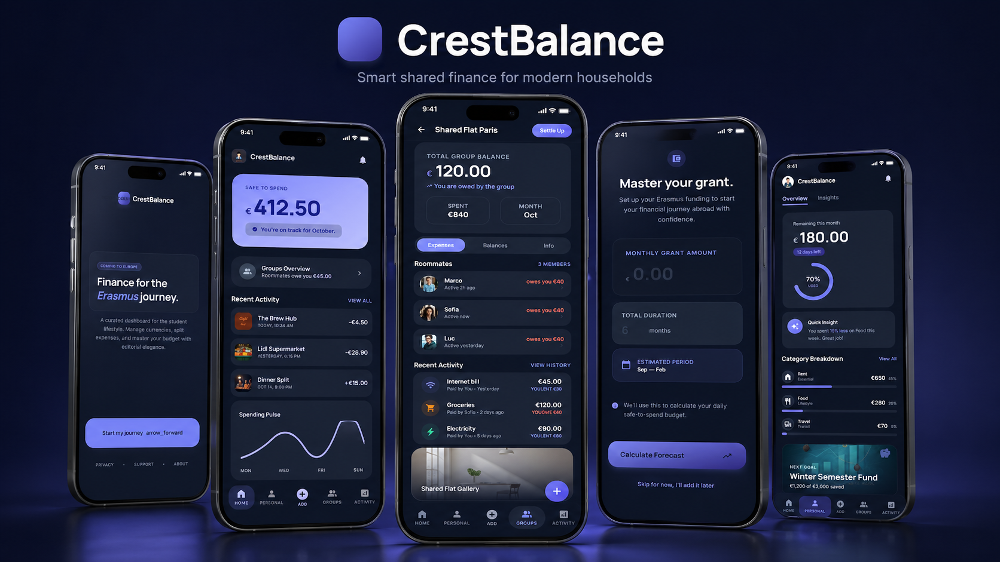
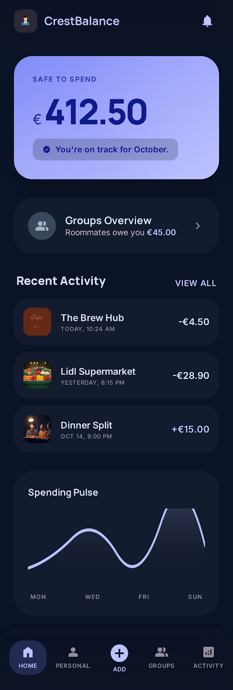
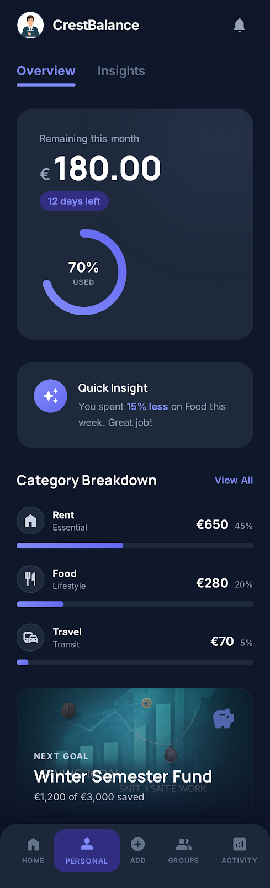
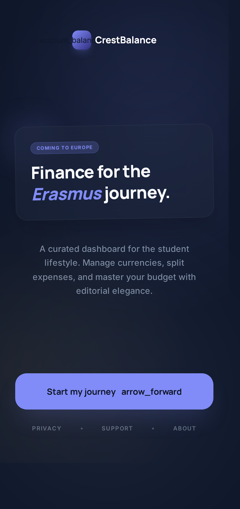

MVP
Aktif ürün iskeleti
CrestBalance; kişisel bütçe takibi, ortak gider paylaşımı ve yapay zeka destekli geri bildirim yaklaşımıyla finansal kararları daha anlaşılır, hızlı ve güvenli hale getirir.
Aktif ürün iskeleti
Veritabanı geliştirme başlangıcı
Ölçeklenebilir iş modeli

Bu alan, gerçek mobil ekran görüntülerin ve Stitch çıktıları için hazırlanmıştır.
Özellikle Erasmus ve ulusal öğrenciler, farklı gelir düzenleri, değişken harcama kalıpları ve ortak ev masrafları nedeniyle bütçelerini sürdürülebilir şekilde yönetmekte zorlanıyor.
Notlar, mesajlaşma ve hesap makineleri arasında parçalanan süreç.
Aylık gidişatı erken fark etmeyi zorlaştıran düşük farkındalık.
Ortak giderlerde yanlış hesap, gecikme ve güven problemleri.
CrestBalance; kişisel bütçe kontrolünü, ortak harcama yönetimini ve zamanla güçlenecek AI tabanlı öneri yapısını tek bir kullanıcı deneyiminde birleştirir.


Aylık planlama, hedef ve gerçekleşen değerlerin tek ekranda takibi.
Ev arkadaşları arasında net pay dağılımı ve ödeme görünürlüğü.
Davranış eğilimlerini anlaşılır görselleştirmelerle sunma.
Kullanıcıya yol gösteren öneriler, uyarılar ve aksiyon ipuçları.
MVP’den ürünleşmeye uzanan modüler ve sürdürülebilir yapı.
Öğrenci odağından genel bireysel bütçe pazarına evrilebilme.
Gelir, hedef ve ay parametreleri ile kişisel bütçe tanımlanır.
Kişisel ve ortak harcamalar hızlı şekilde kategori bazlı eklenir.
Dashboard ile trendler görülür, kritik sapmalar erken yakalanır.
AI destekli geri bildirimlerle sürdürülebilir finans davranışı güçlenir.

Ürün; mobil odaklı bir mimariyle başlatıldı, backend ve database geliştirme fazına geçiş planı aktif durumda. Hedef, veri odaklı karar destek katmanını güçlendiren sürdürülebilir bir ürün altyapısıdır.
Backend/database tamamlama, pilot kullanıcı geri bildirimi, ürün-market uyumu.
AI tabanlı öneri motoru, gelişmiş grafik seti, premium modül kurgusu.
Genel bireysel kullanıcıya açılım, kurumsal iş birlikleri ve ölçekli büyüme.
CrestBalance; güçlü ürün kurgusu, net problem-çözüm uyumu ve ölçeklenebilir yapısıyla yarışma, fon, hibe ve yatırım süreçleri için hazır bir vitrin sunar.